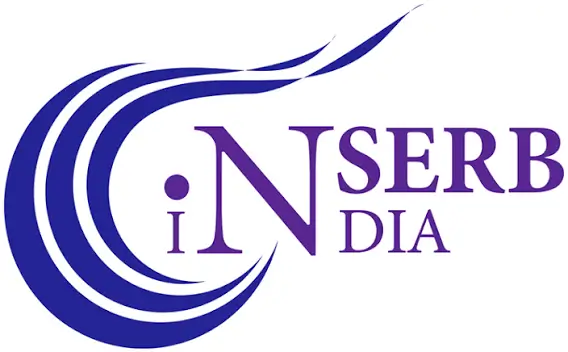

<!DOCTYPE html>
<html>
<head>
<meta charset="utf-8">
<meta name="viewport" content="width=device-width, initial-scale=1">
<script src="./support.js"></script>
</head>
<body>
<x-dc>
<footer style="position:relative;background:#070c16;color:#e8ecf3;font-family:'Geist',sans-serif;">
  <canvas ref="{{ traceRef }}" aria-hidden="true" style="display:block;width:100%;height:40px;-webkit-mask-image:linear-gradient(90deg,transparent,#000 12%,#000 88%,transparent);mask-image:linear-gradient(90deg,transparent,#000 12%,#000 88%,transparent);"></canvas>
  <div style="max-width:1360px;margin:0 auto;padding:clamp(56px,7vw,88px) clamp(20px,5vw,40px) clamp(40px,5vw,56px);display:flex;flex-wrap:wrap;gap:clamp(40px,6vw,96px);justify-content:space-between;">
    <div style="flex:1 1 300px;max-width:640px;display:flex;flex-wrap:wrap;align-items:flex-start;gap:24px calc(clamp(32px,4vw,64px) / 2);">
      <div style="flex:1 1 calc((620px - 100%) * 999);display:flex;flex-direction:column;gap:24px;">
        <a href="index.html" aria-label="TKN — Ion Channel &amp; Receptor Biology, home" style="display:inline-flex;flex-direction:column;align-items:flex-start;gap:14px;text-decoration:none;align-self:flex-start;border-radius:6px;">
          <span style="position:relative;display:block;height:60px;width:146px;flex:none;">
            
            <canvas data-tkn-ions="" aria-hidden="true" style="position:absolute;inset:0;width:100%;height:100%;display:block;pointer-events:none;"></canvas>
          </span>
          <span style="font-family:Georgia,'Times New Roman',serif;font-size:12.5px;letter-spacing:0.16em;text-transform:uppercase;color:#c3cad6;">Ion Channel &amp; Receptor Biology</span>
        </a>
        <div style="font-size:18px;font-weight:500;letter-spacing:-0.01em;">Tapan Kumar Nayak Group</div>
      </div>
      <div aria-hidden="true" style="flex:0 1 calc((620px - 100%) * 999);max-width:420px;height:1px;background:rgba(255,255,255,0.07);"></div>
      <a href="https://home.iitd.ac.in/" target="_blank" rel="noopener" style="flex:1 1 calc((620px - 100%) * 999);display:flex;align-items:center;gap:14px;text-decoration:none;color:inherit;">
        
        <div style="font-size:18px;font-weight:500;letter-spacing:-0.01em;line-height:1.35;color:#e8ecf3;">Indian Institute of<br>Technology, Delhi</div>
      </a>
    </div>
    <div style="flex:2 1 540px;min-width:0;max-width:640px;display:grid;grid-template-columns:repeat(auto-fit,minmax(min(100%,210px),1fr));gap:40px clamp(32px,4vw,64px);">
      <div>
        <h2 style="margin:0 0 18px;font-family:'Geist Mono',monospace;font-size:11px;font-weight:400;letter-spacing:0.14em;text-transform:uppercase;color:#e6b667;">Find us</h2>
        <address style="font-style:normal;">
          <p style="margin:0;font-size:14.5px;line-height:1.75;color:#aab3c3;font-weight:300;">307, KSBS<br>Academic Complex East<br>IIT Delhi, Hauz Khas<br>New Delhi 110016, India</p>
          <a href="mailto:tapannayak@bioschool.iitd.ac.in" style="display:inline-flex;align-items:center;gap:8px;margin-top:8px;min-height:44px;font-size:14.5px;color:#f1d49a;text-decoration:none;overflow-wrap:anywhere;transition:color .15s;" style-hover="color:#fff;">tapannayak@bioschool.iitd.ac.in<span aria-hidden="true" style="font-size:13px;">↗</span></a>
        </address>
      </div>
      <nav aria-label="Footer">
        <h2 style="margin:0 0 6px;font-family:'Geist Mono',monospace;font-size:11px;font-weight:400;letter-spacing:0.14em;text-transform:uppercase;color:#e6b667;">Explore</h2>
        <div style="display:grid;grid-template-columns:1fr 1fr;gap:0 24px;">
          <a href="research.html" style="font-size:14.5px;color:#aab3c3;text-decoration:none;min-height:44px;display:flex;align-items:center;transition:color .15s;" style-hover="color:#fff;">Research</a>
          <a href="publications.html" style="font-size:14.5px;color:#aab3c3;text-decoration:none;min-height:44px;display:flex;align-items:center;transition:color .15s;" style-hover="color:#fff;">Publications</a>
          <a href="people.html" style="font-size:14.5px;color:#aab3c3;text-decoration:none;min-height:44px;display:flex;align-items:center;transition:color .15s;" style-hover="color:#fff;">People</a>
          <a href="teaching.html" style="font-size:14.5px;color:#aab3c3;text-decoration:none;min-height:44px;display:flex;align-items:center;transition:color .15s;" style-hover="color:#fff;">Teaching</a>
          <a href="gallery.html" style="font-size:14.5px;color:#aab3c3;text-decoration:none;min-height:44px;display:flex;align-items:center;transition:color .15s;" style-hover="color:#fff;">Gallery</a>
          <a href="join.html" style="font-size:14.5px;color:#aab3c3;text-decoration:none;min-height:44px;display:flex;align-items:center;transition:color .15s;" style-hover="color:#fff;">Join us</a>
        </div>
      </nav>
      <div style="grid-column:1/-1;">
        <h2 style="margin:0 0 14px;font-family:'Geist Mono',monospace;font-size:11px;font-weight:400;letter-spacing:0.14em;text-transform:uppercase;color:#e6b667;">Supported by</h2>
        <div style="display:grid;grid-template-columns:repeat(2,minmax(0,1fr));gap:12px;">
          <div style="min-width:0;background:#fff;border-radius:10px;height:56px;padding:8px 14px;display:flex;align-items:center;justify-content:center;"></div>
          <div style="min-width:0;background:#fff;border-radius:10px;height:56px;padding:8px 14px;display:flex;align-items:center;justify-content:center;"></div>
          <div style="min-width:0;background:#fff;border-radius:10px;height:56px;padding:8px 14px;display:flex;align-items:center;justify-content:center;"></div>
          <div style="min-width:0;background:#fff;border-radius:10px;height:56px;padding:8px 14px;display:flex;align-items:center;justify-content:center;"><span style="margin-left:8px;font-size:12px;font-weight:500;line-height:1.25;color:#111;">Indian Institute of Technology, Delhi</span></div>
        </div>
      </div>
    </div>
  </div>
  <div style="border-top:1px solid rgba(255,255,255,0.06);">
    <div style="max-width:1360px;margin:0 auto;padding:14px clamp(20px,5vw,40px);display:flex;align-items:center;gap:8px 24px;font-family:'Geist Mono',monospace;font-size:11.5px;line-height:1.6;color:#7d889c;">
      <div style="flex:1;min-width:0;display:flex;flex-wrap:wrap;justify-content:space-between;gap:4px 24px;">
        <span style="display:inline-flex;flex-wrap:wrap;align-items:center;gap:0 6px;min-width:0;max-width:100%;">© 2026&nbsp;Nayak&nbsp;Group&nbsp;· IIT&nbsp;Delhi&nbsp;·<a href="people.html#rakesh-barwar" aria-label="Made with love by Rakesh Barwar" onPointerEnter="{{ rbEnter }}" onPointerLeave="{{ rbLeave }}" onPointerDown="{{ rbDown }}" onClick="{{ rbClick }}" onFocus="{{ rbOn }}" onBlur="{{ rbOff }}" style="display:inline-flex;flex-wrap:wrap;max-width:100%;align-items:center;gap:0 6px;-webkit-tap-highlight-color:transparent;min-height:32px;color:#7d889c;text-decoration:none;opacity:{{ rbOpacity }};transition:opacity .3s;">made&nbsp;with&nbsp;♥&nbsp;by<span style="display:inline-block;white-space:nowrap;opacity:{{ rbNameOpacity }};transform:translateX({{ rbShift }});transition:opacity .3s ease,transform .3s ease;color:#f1d49a;">Rakesh&nbsp;Barwar</span></a></span>
      </div>
      <button onClick="{{ toTop }}" aria-label="Back to top" style="flex:none;display:inline-flex;align-items:center;gap:8px;min-height:44px;padding:0 8px;margin-right:-8px;border:none;background:transparent;cursor:pointer;font-family:'Geist Mono',monospace;font-size:11.5px;letter-spacing:0.08em;text-transform:uppercase;color:#aab3c3;transition:color .15s;" style-hover="color:#f1d49a;">Top<span aria-hidden="true" style="font-size:13px;">↑</span></button>
    </div>
  </div>
</footer>
</x-dc>
<script type="text/x-dc" data-dc-script data-props="{&quot;$preview&quot;:{&quot;width&quot;:1200,&quot;height&quot;:400}}">
class Component extends DCLogic {
  state = { rb: false };
  traceRef = React.createRef();
  componentDidMount() {
    const c = this.traceRef.current; if (!c) return;
    const ctx = c.getContext('2d');
    const reduce = window.matchMedia && window.matchMedia('(prefers-reduced-motion: reduce)').matches;
    let open = false, buf = [], W = 0, H = 40, dpr = 1;
    const base = 12, amp = 16, speed = 0.117;
    const next = () => {
      if (Math.random() < (open ? 0.06 : 0.018)) open = !open;
      return (open ? base + amp : base) + (Math.random() - 0.5) * 2.2;
    };
    const draw = () => {
      ctx.setTransform(dpr, 0, 0, dpr, 0, 0); ctx.clearRect(0, 0, W, H);
      ctx.beginPath();
      for (let x = 0; x < buf.length; x++) x ? ctx.lineTo(x, buf[x]) : ctx.moveTo(0, buf[0]);
      ctx.lineJoin = 'round';
      ctx.shadowBlur = 0; ctx.strokeStyle = '#f1d49a'; ctx.lineWidth = 1.2; ctx.stroke();
    };
    const size = () => {
      dpr = window.devicePixelRatio || 1; W = Math.round(c.clientWidth); H = c.clientHeight;
      c.width = Math.round(W * dpr); c.height = Math.round(H * dpr);
      while (buf.length < W) buf.push(next());
      if (buf.length > W) buf.splice(0, buf.length - W);
      draw();
    };
    size();
    this._ro = new ResizeObserver(size); this._ro.observe(c);
    if (reduce) return;
    let last = 0, acc = 0, on = false;
    const tick = (t) => {
      acc = Math.min(acc + Math.max(0, t - last) * speed, W); last = t;
      if (acc >= 1) {
        const n = Math.floor(acc); acc -= n;
        for (let i = 0; i < n; i++) buf.push(next());
        buf.splice(0, buf.length - W); draw();
      }
      this._raf = requestAnimationFrame(tick);
    };
    const start = () => { if (on) return; on = true; last = performance.now(); this._raf = requestAnimationFrame(tick); };
    const stop = () => { on = false; cancelAnimationFrame(this._raf); };
    this._io = new IntersectionObserver(([e]) => (e.isIntersecting ? start() : stop()));
    this._io.observe(c);
  }
  componentWillUnmount() { cancelAnimationFrame(this._raf); this._ro && this._ro.disconnect(); this._io && this._io.disconnect(); }
  renderVals() {
    const rb = !!(this.state && (this.state.rb || this.state.rbTapped));
    const tap = () => { this.setState({ rbTapped: true }); clearTimeout(this._rbT); this._rbT = setTimeout(() => this.setState({ rbTapped: false, rb: false }), 4000); };
    return {
      piDept: ((window.LAB_CONTENT || {}).pi || {}).dept || '[DEPARTMENT]',
      rbOn: () => this.setState({ rb: true }), rbOff: () => this.setState({ rb: false }),
      rbEnter: e => { if (e.pointerType === 'mouse') this.setState({ rb: true }); },
      rbLeave: e => { if (e.pointerType === 'mouse') this.setState({ rb: false }); },
      rbDown: e => { this._rbHidden = !rb; },
      rbClick: e => { if (this._rbHidden || (this._rbHidden == null && !rb)) { e.preventDefault(); tap(); } this._rbHidden = null; },
      rbOpacity: rb ? 1 : 0.5, rbShift: rb ? '0px' : '-4px', rbNameOpacity: rb ? 1 : 0,
      traceRef: this.traceRef,
      toTop: () => {
        const reduce = window.matchMedia && window.matchMedia('(prefers-reduced-motion: reduce)').matches;
        window.scrollTo({ top: 0, behavior: reduce ? 'instant' : 'smooth' });
        const m = document.getElementById('main');
        if (m) {
          if (!m.hasAttribute('tabindex')) { m.setAttribute('tabindex', '-1'); m.style.outline = 'none'; }
          m.focus({ preventScroll: true });
        }
      },
    };
  }
}
</script>
</body>
</html>
